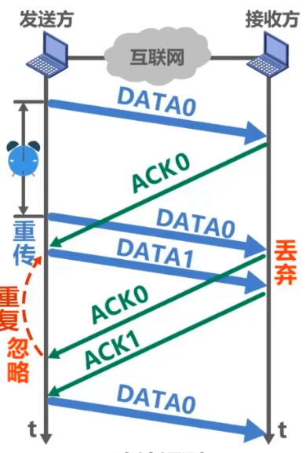
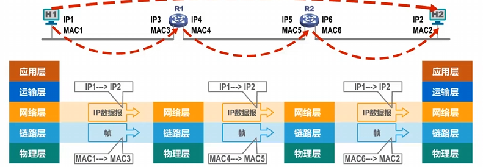

参考视频：计算机网络微课堂-湖科大教书匠
一. 导论
网络、互联网、因特网
网络由若干结点和连接这些结点的链路组成。
结点可以是手机/主机/打印机/交换机，链路可以是有线/无线。
多个网络通过路由器连接起来，形成互联网(internet)。因特网(Internet)是最大的互联网。
互联网的通信协议可以是任意的，因特网的通信协议是TCP/IP协议。
因特网的组成
由边缘部分和核心部分组成。边缘部分就是所有连接在因特网的主机，核心部分就是大量网络和连接这些网路的路由器组成。为连入核心部分的边缘部分提供数据交换服务。
三种交换方式
电路交换
定义：就是很多设备连接到交换机上，交换机感性理解就是有许多入口和出口，它可以指定某个入口的信号发送到某个出口，这样，多个设备就可以同时互不干扰的发送信号了。交换机又可以与交换机相连，扩大网络范围。
电路交换的步骤：
- 建立连接（给通信俩主机分配一条物理通信线路）
- 传输信号（这条物理通信线路一直被占用）
- 释放连接（归还通信资源）
电路交换的优缺点
- 优点 ：延迟小，通信线路都双方专属了，能不小吗。而且数据是有序的。
- 缺点：建立连接时间长；无法做到很多台主机之间同时相互通信（因为俩俩主机通信时就会占用一条通信线路，但是没有那么多通信线路）
报文交换
- 定义：就是不建立连接了，也就是不锁死一条通信线路了。而是直接把报文(发送的数据)发送到交换机上，然后交换机存储转发给下一个交换机，一直到接收方收到报文为止。
- 报文交换的优缺点
- 优点：无需建立连接；动态分配线路
- 缺点：引入了转发时延；需要较大的缓存空间(报文可能很大)
分组交换
定义：就是所谓的边缘部分和核心部分，发送方将报文发送到其所连网络中，通过路由器不断的转发，最终转发到接收方中。
分组交换步骤
- 构造分组：先讲报文划分成若干个等长的数据段，在每个数据段前加上元数据，这些元数据叫首部。
- 存储转发：路由器在拿到分组后，根据首部进行查表转发，找到合适的转发接口，然后转发给下一个路由器
- 还原报文：接收方在收到分组后，去掉首部，将数据段组合还原出报文
- Note：对于同一报文的不同分组，分组的路由路径不一定相同，而且分组到达接收者的顺序不一定与发送时的顺序相同。
分组交换的优缺点
- 优点：无需建立连接；简化了存储管理（因为对报文进行了切片，所以路由器的缓存区只需固定即可，不论报文多大都可以切片为分组后转发出去）；减小重发数据量（假设传输过程中出错了，报文交换就要重新发送整个报文，但分组交换只需重发出错的那个分组即可）
- 缺点：引入了转发时延；更多的元数据信息（切完片后每个分组都有首部）；还原报文时复杂
计算机网络的性能指标
速率
- 8bit = 1B(byte)，kb = \(2^{10}\)B
- bit/s (b/s, bps) （速率的单位都是bit，其余的速率单位也要换算为bit来求解）
- kb/s = \(10^3\) b/s
- mb/s = \(10^6\) b/s
- Gb/s = \(10^9\) b/s
- Tb/s = \(10^{12}\) b/s
- 例题：有一个待发送的数据块，大小为100 MB，网卡的发送速率为100 Mbps，则网卡发送完该数据块需要多长时间?
- 100 mbps =\(100 * 10^6\) b/s
- 100MB = \(100 * 2^{20} \cdot 2^3\) = \(100 * 2^{23}\) b
- 所以t = \(\frac{2^{23}}{10^6} = 8.388608\) s
带宽
- 带宽在模电里的定义：即某段频率区间的宽度
- 带宽在计网中的定义：即最大传输速率，基本单位为b/s，与速率的单位一样
吞吐量
- 定义：表示单位时间内通过某个网络（或信道、接口）的数据量
- 吞吐量的上限就是带宽。
时延
- 定义：时延 = 发送时延 + 传播时延 + 处理时延 + 排队时延
- Note：写这类题最好的方法是画图分析！
- 其中，发送时延是计算机将信息发送到网络中的时延，传播时延是网络的信息传播到路由器的时延，处理时延是路由器存储转发的时延
- 例题：
- 发送时延 = \(\frac{100MB}{1Mb / s} = \frac{100 * 2^{30} * 8}{10^6 b/s} = 838.8608s\)
- 传播时延 = \(\frac{1000 * 1000m}{2 * 10^8 m/s} = 0.005s\)
- \(2.0 \times 10^8\)是光纤传播速度
- \(2.3 \times 10^8\)是铜线传播速度
时延带宽积
- 定义：时延带宽积 = 传播时延 * 带宽
- 把带宽想象成横截面积，传播时延想象为长度，则乘积就是管道的长度。也就是若发送端连续发送数据，则在所发送的第一个比特即将到达终点时，发送端就已经发送了时延带宽积个bit。
往返时间
- 定义：双向交互一次所需的时间
利用率
- 信道利用率：表示信道有百分之几的时间是被利用的（有数据通过）
- 网络利用率：全网络的信道利用率的加权平均
- Note：信道利用率并非越高越好，因为利用率越高，传播时延就越高。
- 如果令\(D_0\)为网络空闲时的时延，\(D\)为当前的时延，利用率为\(U\)。则有公式：\(D = \frac{D_0}{1 - U}\)
丢包率
- 定义：在一定时间范围内，传输过程中丢失的分组数量与总分组数量的比率
- 分组丢失的主要两种情况
- 分组在传输过程中出现误码，被结点丢弃
- 分组在到达分组交换机被丢弃，因为其缓存容量满了
二. 计算机网络体系结构总览
计网体系结构的分类
- OSI体系结构（法律上的国际标准，但没商用）
- TCP/IP体系结构（事实上的国际标准，已商用）
- 原理体系结构（用来教学用的体系结构，是在TCP/IP体系结构上的展开）
- 物理层、数据链路层、网络层、运输层、应用层
分层的必要性
- 物理层：你需要考虑用什么线(光纤/双绞线)去传输信号，用怎样的物理接口、使用什么信号表示0和1，这些都是物理层要考虑的问题。当把物理层解决的时候，我们就可以实现把信号从本机上发射出去了。
- 数据链路层：考虑下面这个场景，一条总线，然后连出很多分线到各个主机上。那么，假设其中一台主机向总线发送了数据，那么他的目标主机咋知道流过的bit流是否是发送给自己的？以及，如果协调各个主机发送的信号争用总线的问题？这些都是数据链路层要解决的问题（提前剧透一下，数据链路层引入了MAC的概念，用于区别网络中的主机）。当解决了数据链路层，我们用可以实现一个网络中的信号传输了。
- 网络层：此时视角来到了很很多路由器、网络、主机的大网络。此时，我们面临着如何标识各网络中各主机的问题（剧透：引入IP地址），以及分组如何选择从源点到目的地的路径。这些问题都划分到网络层去解决。解决了网络层，那么数据就可以在大网络里相互传递了。
- 运输层：在解决网络层的基础上，假设出现了丢包，或者主机接收到分组后，它咋知道是给QQ？还是给微信？所以，这些都是运输层要考虑的问题。当解决了运输层的时候，就已经可以实现进程之间网络的通信了。
- 应用层：这一层就是各种应用的协议，比如万维网的http协议，电子邮件的smtp协议，文件传输的ftp协议，通过各种协议+进程间的交互来完成特定的网络应用。
分层思想举例
- 首先，你打开浏览器进程，然后发送一个访问请求，应用层按照http协议构建一个http请求报文，然后丢给运输层。
- 运输层在http报文的首部添加一个tcp首部，为了区分应用进程和可靠传输，此时成为tcp数据报。
- 网络层在tcp数据报添加一个ip首部，为了使ip数据报在互联网上运行，此时成为ip数据报。
- 数据链路层在ip数据报添加一个首部和尾部ETH，为了让其在一个网络/链路上传输，此时成为帧。
- 物理层在帧前加前导码，然后传输
计网体系结构专用术语
- 专业术语来源于OSI的七层协议体系结构，但也适用于TCP/IP的四层体系结构和五层协议原理体系结构。

实体
- 实体定义：任何可发送或接收信息的硬件或软件进程
- 对等实体定义：收发双方相同层次中的实体
协议
定义：控制两个对等实体进行逻辑通信的规则的集合。
- 比如http协议是控制在应用层的俩对等实体进行通信的规则。tcp/udp协议就是运输层的协议，ip就是网络层的协议
协议的三要素
语法：定义所交换信息的格式，例如IP协议所添加的ip数据报格式如下：

语义：定义收发双方所要完成的操作
- 就是收到报文后双方要做的动作。以http协议为例，接收方收到http请求报文后，先查找，然后返回一个响应报文。
同步：定义收发双方的时序关系
服务
- 定义：在协议的控制下，两个对等实体间的逻辑通信使得本层能向上一层提供服务。要实现本层协议，还需要使用下面一层所提供的服务。
- Note：协议是“水平”的，服务是“垂直”的
服务访问点
- 定义：在同一系统中相邻两层的实体交换信息的逻辑接口，用于区别不同的服务类型。
- 数据链路层的服务访问点为帧的“类型”字段
- 网络层的服务访问点为IP数据报首部中的“协议字段”
- 运输层的服务访问点为“端口号”
服务原语
- 定义：上层使用下层所提供的服务必须通过与下层交换一些命令，这些命令称为服务原语。（没搞懂，以后来填坑）
协议数据单元PDU
- 定义：对等层次之间的数据包称为该层的协议数据单元
- 物理层的PDU：比特流
- 数据链路层的PDU：帧
- 网络层的PDU：IP数据报
- 运输层的PDU：TCP报文段
- 应用层的PDU：报文
服务数据单元SDU
- 定义：同一系统内，层与层之间交换的数据包称为服务数据单元
- Note：多个SDU可以合成为一个PDU，一个SDU也可以划分为几个PDU
三. 物理层
物理层的基本概念
- 在计网中，用来连接各种网络设备的传输媒体种类众多，大致可分为两类，一类是导引型传输媒体（双绞线、同轴电缆），一类是非导引型传输媒体（微波通信）。
- 物理层考虑的是怎样才能在连接各种计算机的传输媒体上传输数据比特流。
- 物理层位数据链路层屏蔽了各种传输媒体的差异，使数据链路层只需要考虑如何完成本层的协议和服务，而不必考虑网络具体的传输媒体是什么
- 物理层协议的主要任务
- 机械特性：指明接口所用接线器的形状和尺寸、引脚数目和排列、固定和锁定装置
- 电气特性：指明在接口电缆的各条线上出现的电压的范围
- 功能特性：指明某条线上出现的某一电平的电压表示何种意义
- 过程特性：指明对于不同功能的各种可能事件的出现顺序
物理层下面的传输媒体
- 引导型传输媒体：同轴电缆、双绞线、光纤、电力线
- 非引导型传输媒体：无线电波、微波、红外线、可见光
传输方式
- 串行/并行传输：
- 串行传输：只需一条线，一个一个bit的传输
- 并行传输：n条先，n个n个bit的传输，速率位串行传输的n倍
- 计算机之间的传输通常为串行传输，计算机内部（如果CPU与内存之间的传输通常为并行）
- 同步传输/异步传输：
- 同步传输：数据块以bit流传输过去，字节之间没有间隔
- 因为没有间隔，所以必须保证收发双方的时钟频率同步
- 外同步：在收发双方之间添加一条单独的时钟信号线
- 内同步：发送端将时钟同步信号编码到发送数据中一起传输（例如曼彻斯特编码）
- 因为没有间隔，所以必须保证收发双方的时钟频率同步
- 异步传输：字节之间有间隙，且间隙时间不固定
- 因为间隙时间不固定，所以叫异步。所以发送端要在每个字节前后加上起始位和结束位
- 同步传输：数据块以bit流传输过去，字节之间没有间隔
- 单工/半双工/全双工通信：
- 单工(向)通信：通信双方只有一个数据传输方向（例如广播）
- 半双工通信：通信双方可以互相传数据，但是不能同时进行（例如对讲机）
- 双工通信：通信双方可以互相传数据，且可以同时进行（例如电话）
- 串行/并行传输：
编码与调制
信号都是发到信道中，信道不等于传输媒体。如果是单工传输，那么传输媒体中只有一个信道。而对于半双工和全双工传输，传输媒体中就有两个信道。
以下是几种常用编码技术：
- 不归零编码：就是010101直接传，缺点就是接受双方时钟频率必须一样
- 归零编码：就是10(-1)(0)1010(01)0这样传，接收方只需在信号归零时进行采样即可，无需保证双方时钟频率必须一样。但是缺点就是一般的编码内容都给归零了，浪费资源
- 曼彻斯特编码：每个码元的中间时刻都会发生信号跳变，跳变既表示了时钟也表示了数据
- 差分曼彻斯特编码：一样是用跳变，但是跳变仅表示时钟，数据要看每个码元开始处的电平与上一个码元结束处电平是否变化，来表示数据
调制是指把数字信号调制为可以发出去的信号。
以下是一个基本调制方法：
- 正交振幅调制QAM，例如QAM16，它调制出的波形可以有12种相位，每种相位有1或2种振幅可选。故可调制出16种码元（看图）
- 每个码元可以表示4个bit信息。码元与4位bit信息之间的对应关系采用格雷码。
信道的极限容量
- 奈氏准则（没考虑噪声）：
- 理想低通信道的最高码元传输速率：2 * W(信道带宽，单位Hz) (码元 / 秒)
- 理想带通信道的最高码元传输速率：W (码元 / 秒)
- 码元 / 秒与bit / s的换算，若一个码元携带n个比特，则码元 / 秒 = n bit/s
- 香农公式：
- \(c = W \times \log_2(1+\frac{S}{N})\)
- c：信道的极限信息传输速率(bit/s)
- W：信道带宽（Hz）
- S：信道内所传信号的平均功率
- N：信道内的高斯噪声功率
- S/N：信噪比（dB）
- 奈氏准则（没考虑噪声）：
信道复用技术
- 频分复用(FDM)、时分复用(TDM)、统计时分复用
- 略
- 波分复用
- 略
- 码分复用
- 打个比方，FDM是不同的组在不同的房间里说话，TDM是不同的人在不同的时刻说话，CDMA是不同的人使用不同的语言说话
- CDMA技术可以让不同用户在同样的时间使用同样的频率进行通信。为什么能做到呢？因为每个用户有一个唯一标识符——码型(芯片序列)
- 码型有m位，用1代表1，-1代表0。且要保证不同用户的码型俩俩正交，这样才可以互不干扰同时发送。
- 用\(S, T\)表示俩用户的码型，那么有\(S^\mathrm{T}T=0\)，说明对应位相等的个数与对应位不等的个数一样。那么可推导出\(S^\mathrm{T}\overline{T} = 0\)。取反后对应位原本相等的就变不等了，原本不等的就变相等了，但个数还是一样的。
- OK，然后如果一个用户要发送一个1，那么就把自己的码型发出去(1 bit时)，如果发送0，就把自己的反码发出去(1 bit时)。
- 如果n个用户同时发送一个bit信息，那么n个码型线性叠加在一起记为W，然后丢给接收站点。
- 如果想得到用户1，也就是码型为S的那个人在这一时刻发送的bit信号时什么，就拿它的码型S与叠加后码型W做点乘。即\(S \cdot W\)。若结果为1，则这一时刻用户1发了一个1；如果结果为-1，则它发了一个0；如果结果为0，则它在这一时刻啥都没发。
- 原理非常好理解，把W展开，除了自身码型，其余码型相乘后因为正交都为0了。只剩自己了（若这一时刻没发就连自己都没有），然后自己与自己相乘就是1。
- 频分复用(FDM)、时分复用(TDM)、统计时分复用
四. 数据链路层
当我们研究数据链路层时，我们的目光就只放在数据链路层即可。也就是信息在数据链路层上传输。
然后数据链路层上传输的基本单元是帧。数据链路层有三个重要问题：封装成帧、差错检测、可靠传输。
封装成帧是指将网络层数据单元加上帧头帧尾，成为帧，然后让其在数据链路上传输。帧头里有源地址和目的地址，帧尾里有检错码。
差错检测是指帧在传输中可能出现误码（0和1的互相转变），接收方可以通过帧尾里的检错码来知道传输过程中是否出现了误码。
可靠传输是指尽管误码是不能完全避免的，但若能实现发送方发送什么，接收方就能收到什么，就称为可靠传输。
帧
- 帧里包含数据和帧头帧尾，帧头帧尾除了有源地址、目的地址、检错码，大部分数据链路层协议还会有帧定界标志，就是用来分区一个个的帧用的。（但是也有些数据链路层协议例如MAC帧没有帧定界）
- 数据链路层都要满足的一个性质就是：透明传输
- 意思是对网络层交付给自己的传输数据没有任何限制。
- 如果有限制了，我消息都发不出去，你这个数据链路层有啥用？
- 怎么样满足呢？我们知道，在一连串信息流中，我们区分一个个帧的方法就是帧定界符。那如果要传输的数据里就包含有帧定界符咋办？很简单，在传输之前，扫描一遍数据，如果碰到帧定界符，就在前面加一个转义字符。
- 这样的话，接收方只有在接收到没有转义字符的帧定界符时才会进行分割。
- 实际中，帧定界符通常是01111110，所以我们通常的做法是扫描一遍数据，在每连续5个1后面插一个0（这样就可以保证数据中不会出现帧定界符）。接收方就把0删掉即可。
- 帧的数据部分的长度上限，叫做最大传送单元，MTU
差错检测
- 在通信中，若bit 1变为0,0变为1，则称为比特差错。在一段时间内，传输错误的比特占所传输比特总数的比率称为误码率BER
- 使用差错检验码来检测数据在传输过程中是否出现了比特差错。
- 最简单的差错检验的方法是奇偶校验，也就是在待发送的数据后面添加1位奇偶校验位，使整个数据中“1”的个数为奇数（奇校验）或偶数（偶校验）
- 所以通常数据链路层采用的差错检验的方式是CRC循环冗余校验。具体是这么做的 ：
- 接受双方约定好一个多项式，例如：\(G(x) = 1 \cdot x^3 + 1 \cdot x^2 + 0 \cdot x + 1 \cdot 1\) ，然后假设要发送的信息是101001，那么第一步首先是在发送信息的后面补最高次项的次数那么多个0，也就是补3个0（补0的次数记为x），即101001000。这么做是为了避免不够除（后面你就知道了）。然后提取多项式的系数作为除数。即：1101。然后101001000与1101做除法，得到的余数为1，但是要补前导0直到位数与x相同（这样子被除数和余数才可以 对应相加）。
- 然后将余数+被除数，也就是把余数粘到发送信息的后面101001 001，然后就可以发送了。
- 接收方接收到这个数字后 ，会拿其对除数做除法，如果余数为0就没出差错。如果不为0就说明传输出现了错误。这很好理解。我们算出来的是余数，然后我们余数 + 被除数传去过，那么没出错的话显然就是可以整除除数的。
可靠传输
前面我们通过例如CRC循环冗余校验、奇偶校验等方式，可以检测出传输过程中是否产生了误码。那么检测之后，如何解决误码呢？
如果数据链路层提供的是不可靠服务，那么它就会仅仅丢弃有误码的帧，其他什么也不做
如果数据链路层提供的是可靠服务，那么它就会想办法去一定解决这个问题。
一般情况下，有线传输的误码率比较低，为了减小开销，并不要求数据链路层向上提供可靠传输服务，即使出现了误码，可靠传输的问题由其上层处理。
无线链路易受干扰，误码率比较高，因此要求数据链路层必须向上层提供可靠传输服务。
下面我们来介绍三种可靠传输协议，请注意，可靠传输这个概念并不局限于数据链路层，所以下面的一些术语将会跳出数据链路层：
停止——等待协议SW
方法就是发送方一个一个分组的发，每发一个分组过去，接收方就检查一下该分组有没有误码，没有就发一个ok回去，发送方收到ok后再继续发送下一个分组；如果检查到有误码，那么就发一个no回去，发送方收到no后就重新发送该分组。
用一张图来完美的表示：
但是理解情况是这样，实际情况并没有那么完美：有可能发送的分组到一半就突然丢失了，那接收方都收不到分组，咋判断正不正确呢？为了解决这个情况，会在发送方设置一个超时计时器，如果超过了设定时间没有啥收到接收方的反馈，就会重传（重传时间通常选为略大于"从发送方到接收方的平均往返时间"）。
但是还会有问题，就是可能接收方传回去的反馈可能中途丢失了，这样就会造成同一个分组发送方发两次。所以接收方如何判断接收到重复分组呢？很简单，发送方在发送分组的时候给分组加上1或0的编号，编号交替给。这样假设DATA0传过去，然后反馈中途丢失了，会重传DATA0。那么接收方收到两份DATA0，发现编号都是0，所以只会保留一份。这样就解决了反馈丢失的问题：
但是还会有问题，就是可能接收方传过去的反馈迟到了，传到的时候，发送方的DATA0已经重发了，所以发送方就会以为这个反馈是给刚发送的重发DATA0的，于是把DATA1发出去。然后重发的DATA0到了后又反馈一个ok给发送方，发送方此时就会以为DATA1也ok了，于是就发新分组出去。但其实，刚才的ok是对重发DATA0的ok，这样就错位了。为了解决这个问题，我们给反馈也加上编号0或1即可：

总结：可能会出现三个问题，超时重传、确认丢失、确认迟到
接下来来看看停止等待协议的信道利用率：
- \(T_D\)：发送数据分组所耗费的发送时延
- \(RTT\)：最后一个发送bit发出到收到第一个反馈bit的时间
- \(T_A\)：发送确认分组的发送时延
所以信道利用率就是：\(\frac{T_D}{T_D + RTT + T_A}\)
回退N帧协议
回退N帧协议就是对停止等待协议的改进。也就是不是等一个发一个了，而是一口气发很多个。知道滑动窗口不，是的，他就是发送方设定一个窗口，然后挨个发送出去，窗口也挨个往前滑。接收方的窗口大小只有一个，收到数据后往后滑，每隔一段时间发一个ok反馈。并不是每个数据都要发反馈，可以比如收到了 DATA0、1、2、3，然后只在3发一个ok反馈就行了，这样就表明0、1、2、3我都接收到了。
但是，如果一旦出现了误码，比如3出现了误码，那么0、1、2都要重传了。这就是回退N帧的意思。其实当发送方的窗口大小为1时这个协议就退化为了停止等待协议。
选择重传协议
选择重传协议是对回退N帧协议的改进，具体来说，就是把接收方的窗口大小给扩大，然后当出现误码时，只重传有误码的数据即可。那么需要做到这一点，就不能像回退N帧协议那样隔一段时间才发一个反馈了，而是应该是每一个data都发一个反馈，这样就知道谁出现了误码。
例如上面这个图，发送方把0、1、2、3发过去 ，但是2出现了丢失。接收方收到0、1后，窗口往后 滑到4、5。然后收到了3，但因为此时2丢失了没收到，所以窗口不能继续滑动。等到发送方重新把2发过来的时候，接收方的窗口才能继续滑。
很符合直觉的一个方式，但是要注意，这个方法的窗口大小很容易错。发送方的窗口大小\(W_T\)最大是\(2^{n-1}\)（上图就是4），接收方的窗口大小\(W_R\)最大是\(W_T\)。
点对点协议PPP
PPP协议是目前使用最广泛的点对点数据链路层协议
主要由三部分构成：
- 对各种协议数据报的封装方法（封装成帧的方法）
- 链路控制协议LCP（用于建立、配置以及测试数据链路的连接）
- 一套网络控制协议NCPs（其中每一个协议支持不同的网络层协议）
PPP协议的帧格式：
标志就是帧定界符，0x7E就是01111110
如果数据里有帧定界符，咋办呢？
可以从字节方向解决，也可以从比特方向解决：
比特方向前面我们讨论过了，就是在连续的5个1后插入一个0
对于字节方向的处理方法，看下面这个图即可：
地址和控制字段暂时用不到，不用管
FCS就是CRC算出来的东西，其计算范围是从地址到数据部分
- PPP协议不提供可靠传输服务，即如果检测到误码帧则直接丢弃
媒体接入控制
这个技术就是为了解决多个用户想传输数据，但是只有一条信道的时候。
第一种解决方案是信道复用。
频分复用FDM：
原理如图：
时分复用TDM
原理如图：
波分复用WDM
原理如图：
码分复用CDM
- 人们更常用的名字是码分多址CDMA。因为CDMA是CDM里最常用的技术。
- 这个知识点在物理层讲过了，去那里看吧。
第二种方法为CSMA/CD、CSMA/CA协议，听不懂目前。
MAC地址、IP地址、ARP协议
- MAC地址是以太网的MAC子层所使用的地址
- IP地址是TCP/IP体系结构网际层所使用的地址
- ARP协议属于TCP/IP体系结构的网际层，其作用是已知设备所分配到的IP地址，使用ARP协议可以通过该IP地址获取到设备的MAC地址
MAC地址
MAC地址很好理解，就是在数据链路上有很多主机嘛，所以每个主机都需要有一个自身的标识。MAC地址一般被固化在网卡中，所以MAC地址也被称为硬件地址或者物理地址（但这不意味着它属于物理层）
MAC地址通常遵循IEEE 802格式，即将每4个bit写为一个十六进制，共12个十六进制字符，写为：XX-XX-XX-XX-XX-XX或者XX:XX:XX:XX:XX:XX或XXXX.XXXX.XXXX
IP地址
IP地址就是因特网上设备的地址。由两部分组成，网络地址+主机地址，主机地址用来标识同一网络下的哪个设备。
那这样的话，IP地址跟MAC地址作用的区别在哪呢？从这张图就可以看出：

ARP协议
- 在知道了MAC地址和IP地址后，我们不禁会有一个疑问，如何通过IP地址找到MAC地址呢？
- 这就要通过ARP地址解析协议。
- 其实很简单，ARP就是张表，比如H1想给R1发东西，他就需要知道R1的MAC和IP，IP已经知道了，MAC就去查自己的ARP表，里头记录了所有设备的IP和MAC的对应关系，如果找到了就ok了。如果没找到，就先告诉一个“ARP广播”，相当于去网络上请求别人的IP-MAC映射关系，请求到了就也ok了。但需要注意的是，ARP广播只能在一段链路或者是一个网络上进行。
集线器和交换机的区别
- 这么说吧，集线器和交换机外表都是star图，但是集线器本质仍然是一条总线，交换机则真正实现了不同的线。
- 交换机里有一个帧交换表，里面记录了每个接口连的设备的MAC地址。
- 所以如果使用交换机的话，比如主机H1想传东西给H2，那么它就先把信息传到交换机，然后交换机就去查找哪个接口是H2的MAC地址，然后把信息从那个接口传过去。
- 但如果使用集线器的话，H1会把信息传到总线上，所以信息会传给每一个主机，只不过每个主机会判断这个信息的目的MAC地址是不是自己，不是就不接收，这样子最终信息也成功传到了目的主机H2。
交换机
自学习算法
前面我们已经知道了交换机的基本工作原理。那么不免就会有一个疑问：“交换机内部的帧交换表是咋来的？”
答案就是交换机有自学习算法，下面我们来详细看看这个自学习算法：
其实自学习算法很简单，就是若有一条信息进入交换机，交换机就会在表中登记这条信息来自于哪个端口，其对应发送者的MAC地址是啥，这是更新阶段；对于查找阶段，如果表里有记录就按照记录走，没记录都每个端口都发送（泛洪）。随着时间的推移，这个表必然就会逐渐填好。
生成树协议STP
- 对于一个网络，如果交换机之间的某根线突然爆了咋办，网络不连通是件很不好的事情。所以为了保证可靠性，往往都会在交换机中连很多的线，一定要保证其连通。但连很多线会带来冗余，这就会造成广播风暴，即一个信息由于泛洪协议被转圈圈的传播，从而导致同一条信息在交换机的更新阶段被更新为不同的接口造成错误。
- 所以我们是不希望有环的。这时候就会采用生成树协议STP。
- 这个协议就是，你可以连很多很多线，但是这个协议会根据目前线的好坏情况，实时计算出一个生成树，这样就保证了实时图是连通且无环的了。
虚拟网络VLAN